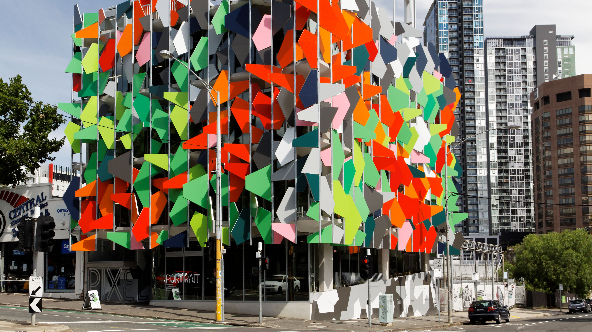
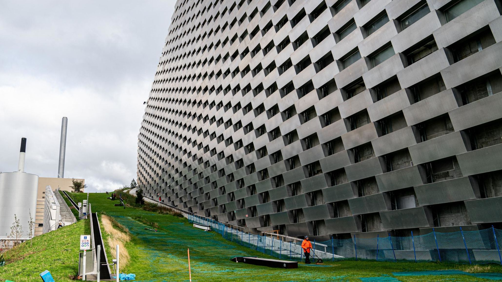

Green Architecture
By Brycen Weeks
“Building becomes architecture only when the mind of man consciously takes it and tries with all his resources to make it beautiful, to put concordance, sympathy with nature, and all that into it. Then you have architecture.” Frank Lloyd Wright, widely considered one of the greatest architects in our century, stated this. I also believe that.
Architecture was built off of nature. Olduvai Gorge, the oldest and one of the most important paleoanthropological sites, revealed the first true evidence of housing. The most preserved ancient houses were made of timber frames which were finished in mud.
Green Architecture seeks to minimize the horrible environment damage caused by mass production. Green architects opt for materials like ferrock, ashcrete, and recycled plastic to build structures, rather than concrete, which make up for 8% of all emissions worldwide.
While steel also makes up for a large portion of emissions, green architecture opts to use direct reduced iron instead, which can almost make steel carbon-free. It works by reacting hydrogen with iron ore directly, and is already being used with natural gas instead of hydrogen.
We need green architecture because buildings and infrastructure make up 51% of carbon emissions worldwide according to Ing.com. These carbon emissions blanket the earth, which traps heat in the atmosphere, which leads to global warming.
Solar panels are also a form of green architecture. When the sun shines on the cell, it is absorbed in the PV. It creates an electrical charge, causing electricity to flow.
Green Architecture started in the late 80s and early 90s when the American Institute of Architects and the Environmental Protection Agency developed new guidelines for architects.
It created the American Institute of Architects: Committee on the Environment, which is the oldest organization dedicated to sustainable design. Another company dedicated to sustainable design is the United States Green Building Council.
Examples of Green Architecture
The Pixel Building in Melbourne, Australia
CopenHill in Copenhagen, Denmark
The Vertical Forest in Milan, Italy